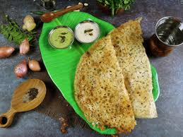

Rawa Dosa Recipe

Ingredients
- 1 cup semolina (rava)
- 1/4 cup rice flour
- 1/4 cup all-purpose flour (optional)
- 2 cups water
- 1/2 teaspoon cumin seeds
- 1-2 green chilies, finely chopped
- 1/4 cup onion, finely chopped
- 2 tablespoons fresh coriander leaves, chopped
- Salt to taste
- Oil or ghee for cooking
Instructions
- In a mixing bowl, combine semolina, rice flour, all-purpose flour (if using), and salt.
- Add water gradually to form a thin, smooth batter. The batter should be pourable.
- Mix in cumin seeds, green chilies, chopped onions, and coriander leaves.
- Let the batter rest for 20-30 minutes.
- Heat a non-stick pan or tawa over medium heat and grease lightly with oil or ghee.
- Pour a ladleful of batter onto the pan, spreading it in a circular motion to form a thin layer.
- Drizzle some oil or ghee around the edges of the dosa.
- Cook until the edges turn golden brown and the surface is cooked, about 2-3 minutes.
- Carefully flip and cook for another minute if you prefer both sides crispy.
- Repeat with the remaining batter, greasing the pan as needed.
- Serve hot with coconut chutney and sambar.